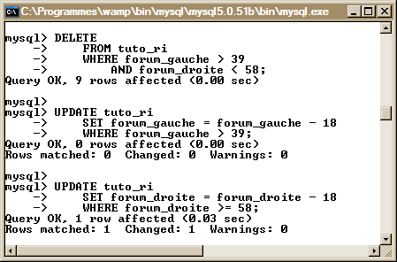

Pour mieux expliquer, prenons (par exemple) des forums, ayant plusieurs "niveaux" (comprenez sous-forums). Pour accéder aux "enfants" et aux "parents" d'un forum, vous pensez sûrement (et, je pense, vous les utiliserez) les héritages (présence d'une colonne parent_id, méthode également connue sous le nom de représentation classique) par auto-jointures, c'est-à-dire en renseignant récursivement la clause WHERE à l'aide de sous-requêtes. Mais, ceci peut très vite devenir lourd... et peu pratique, surtout à partir d'un certain niveau (et qui, au grand dam de tous, est vite atteint).
Dans ce tuto, nous allons donc voir comment éviter cette lourdeur en employant une "ruse" mise au point par les développeurs : la représentation intervallaire (nommée RI pour les intimes) ! Accrochez-vous, on y va !
Avant d'attaquer la bête, nous avons, tout d'abord, besoin de la définir. Tout d'abord, qu'est-ce que la repr...
C'est vrai ça, c'est quoi la rapré... représentation invert... cette chose ?
La représentation intervallaire ! Je la voyais arriver à des kilomètres à la ronde, celle-là !
Je commence par un point optionnel (ce sera plus facile à expliquer). Cette technique peut permettre de situer un élément dans une hiérarchie. Pour donner une image de cette notion de hiérarchie, prenons l'exemple d'un immeuble, couplé à un système de forums (vous allez très vite comprendre). Vous savez, un immeuble est constitué d'étages... Disons que la catégorie d'un système de forums est le rez-de-chaussée de cet immeuble, et les étages, les sous-forums (qui sont chacun des sous-forums de l'étage précédent). Voilà ce qu'est la notion de hiérarchie : si je suis au quatrième étage (non, non, je ne vais pas sauter :D ), ça veut dire que je suis... au quatrième niveau, ou à la quatrième hiérarchie. Il peut, bien entendu, y avoir plusieurs sous-forums ayant le même niveau, comme, toujours à l'image d'un immeuble, il peut y avoir plusieurs appartements à chaque étage.
Ensuite, un point essentiel à retenir dans la représentation intervallaire (je ne vois pas ce qu'il y a de compliqué à retenir là-dedans, ce n'est quand même pas de l'acide acétyli... acide acytéli... bref, un certain médicament :p ), les notions de borne gauche, borne droite.
Pour illustrer cette notion, voici un schéma fait par mes soins (mes capacités en graphisme étant très limitées, vous m'excuserez de la qualité de celui-ci), qui, je dois vous l'avouer, reprend un peu la même idée que le schéma de Frédéric Brouard (le mien étant simplifié, et (surtout) plus adapté à notre cas de développeurs en herbe), qui d'ailleurs présente de très bons tutos sur SQL.
Comme vous pouvez le voir, chaque borne de chaque élément se voit attribuer un nombre. Ce nombre permet de déterminer la position de l'élément dans l'ensemble. Notez également que le nombre de la borne gauche est toujours inférieur au nombre de la borne droite. Notez bien ce point, il est très important (je fais une liste de rappels à la fin de cette première sous-partie) !
À propos de points importants, en voilà un autre à noter : si la différence entre sa borne droite et sa borne gauche (et non pas l'inverse !) est égale à 1, on désigne alors l'élément étant une feuille. Sinon, ce sera un noeud, et cette même différence sera égale au double du nombre d'enfants, auquel on ajoute 1.
Je pense que vous constaterez qu'au lieu de mettre des noms aux éléments sur mon schéma, j'ai juste indiqué les niveaux de chaque élément, pour vous montrer la tête que ça peut avoir.
Euh... C'est bien beau tout ça, mais quels sont les points essentiels de la représentation intervallaire ?
J'y viens, et vous posez la question pile au bon moment. Je vous ai fait une petite liste de trucs à retenir....
La notion de niveaux détermine la hiérarchisation de la feuille, qui, je dois vous l'avouer, n'est pas essentielle à la RI, mais plutôt utile (pour les tris par exemple).
La notion de bornes, qui détermine la situation de la feuille (ou du noeud) par rapport à l'ensemble.
Une feuille désigne un élément caractérisé par le fait que la différence entre sa borne droite et sa borne gauche est égale à 1. Un noeud, lui, est un élément caractérisé par les autres cas (donc la différence borne droite - borne gauche supérieure à 1).
Pour calculer la différence entre les deux bornes, il faut TOUJOURS soustraire la borne gauche à la borne droite, et non pas l'inverse. En effet, la borne gauche est TOUJOURSinférieure à la borne droite.
La différence entre les deux bornes d'un même noeud (et non pas d'une feuille) est (quoi qu'il advienne) TOUJOURS égale au double du nombre d'enfants, auquel on rajoute 1.
Passons maintenant à la préparation pour pouvoir pratiquer, dans la seconde partie de ce tutoriel (majoritairement des requêtes SQL, pour servir à titre d'exemples). Je montrerai également pourquoi il est difficile (et coûteux) d'utiliser les "auto-jointures" (c'est-à-dire d'utiliser avec abus la clause WHERE et les sous-requêtes) pour accéder aux noeuds parents et aux feuilles... Et que c'est même presque impossible pour nous en ce moment. À moins d'avoir des idées tordues... :lol:
Pourquoi préférer la RI à l'héritage récursif ? Les tables SQL d'exemple
L'héritage récursif ? Ourf, c'est lourd... et infaisable (pour des Zéros comme nous) :D
Voici la table type que nous allons utiliser pour illustrer la faiblesse ( :p ) de l'héritage récursif :
À partir d'un des sous-forums (on va dire celui ayant l'id numéro 7, le plus profond :diable: ), comment faire, à l'aide des jointures, pour accéder à la catégorie 1, en affichant tous les forums parents au sous-forum sélectionné ? Je vous laisse 5 minutes pour essayer de faire cette requête... Et bien entendu, en ayant qu'un seul forum par ligne (pas tous, sinon ce serait trop facile, surtout si on connaît la profondeur du sous-forum :p ).
...
...
Vous n'y arrivez pas ? Pour tout vous avouer, moi non plus :D . Ici, on peut facilement avoir tous les forums parents sur la même ligne à l'aide de quelques jointures (en utilisant l'héritage de la colonne forum_parent_id) ; or, ce n'était pas ce qui était demandé : on voulait un forum par ligne. Certes, les jointures, c'est pratique, mais à la longue... c'est vite pesant et peu pratique.
La représentation intervallaire ? Yeah !
Reprenons la première table... En l'adaptant quelque peu pour pouvoir la rendre utilisable par la représentation intervallaire... Hop, la voilà prête à l'emploi (toujours avec les insertions, converties qui plus est :magicien: ) !
La note concernant les noms des (sous-)forums reste toujours valable dans ce cas-ci.
Allez : même exercice que tout à l'heure ! Vous avez... 10 minutes pour le faire : rechercher l'id, le nom, et la hiérarchie des noeuds parents de la feuille ayant l'id "7", en les triant du parent le plus proche au parent le plus lointain !
...
...
...
...
...
...
Ah, c'est vrai, j'avais oublié le petit indice : utiliser les bornes des feuilles. Si vous n'aviez pas deviné (nan, surtout pas, pas la fenêtre :waw: !), ce n'est pas grave, voici ma solution, et pour tenter de me faire pardonner ( :ange: ), je l'ai commentée pour que vous la compreniez mieux).
SELECT forum_id, forum_name
FROM tuto_ri
WHERE forum_gauche < 7
AND forum_droite > 8
ORDER BY forum_level DESC;
On retrouve donc ce qu'on recherchait
On cherche à récupérer l'ID, le nom, et la hiérarchisation des noeuds parents, ce qu'on fait en sélectionnant les champs forum_id, forum_name, et forum_level. Ensuite, dans la clause WHERE, on applique ce qu'on a pu observer sur mon (beau :p ) schéma : la borne gauche d'un des (sous-)forums est toujoursplus grande que celle des noeuds parents. On sélectionne donc tous les noeuds ayant une borne gauche plus petite que (dans notre cas) 7. On applique la même chose à la borne droite, sauf que cette fois-ci, la borne droite de la feuille est toujoursplus petite que celle des noeuds parents.
On a donc les noeuds que l'on désire... Mais ce n'est pas fini, il y avait un petit piège : on souhaite avoir les noeuds... Du plus proche au plus lointain par rapport à la feuille. Il suffisait juste d'ajouter une petite clause ORDER BY, en indiquant le nom de la colonne qui sert à trier (forum_level), et par ordre décroissant. Je vous avais bien dit que la notion de hiérarchisation pouvait s'avérer utile par moments... En voilà la preuve même !
Ici, on cherche aussi à inclure le forum courant dans le résultat
Bon, je vous pense prêts pour la pratique : à l'assauuuuuut :pirate: !
Ici, nous allons voir les différentes techniques et opérations chirurgicales liées à la représentation intervallaire : modifier le statut d'un élément (transformer un noeud en une feuille, et vice-versa), ajouter des feuilles à un noeud, compter le nombre d'éléments dans un noeud, pouvoir mettre à jour les indices aux bornes en fonction du nombre d'éléments (selon que ce sera une feuille ou un noeud), le déplacement de noeuds...
Cette partie du tuto agira donc en tant que plusieurs séries de "minis-TP", qui demandent par moments de la réflexion, et par moments des astuces... que je développerai ici.
Stats sur les différents noeuds
Dans cette sous-partie, nous allons voir comment compter le nombre d'éléments d'un noeud, le nombre de feuilles d'un noeud, le nombre de noeuds dans un même noeud, ... bref, on va compter. :p
Compter le nombre d'éléments d'un noeud
Pour compter le nombre d'éléments d'un noeud, ça va être relativement (très) simple, et (très) vite expédié. Vous vous souvenez, à la fin de la première partie de ce tuto, on a vu comment récupérer tous les parents (et leur caractéristiques) d'une feuille / d'un noeud, en incluant ou non l'élément, non ? Eh bien ici, ça va plus ou moins être le même topo.
Ha ! Laisse-moi deviner : au lieu d'inclure l'élément dans la sélection, on va déjà devoir utiliser les signes strictement supérieur / inférieur, non ?
Bingo ! De plus, vous aurez besoin, comme je l'ai dit, non pas de sélectionner les parents de l'élément, mais ses enfants ! Donc, au lieu de rechercher tous les éléments qui ont une borne gauche inférieure à celle de l'élément recherché, et une borne droite supérieure à celle de l'élément, on va faire l'inverse ! Je vous file la solution dans quelques minutes, le temps pour vous de chercher (et moi d'aller piquer un petit somme :ninja: ). Ah, j'oubliais pour quel forum on va faire cette opération : cette fois-ci, on va chercher le nombre d'enfants pour le forum ayant l'ID numéro... 3 !
Petit indice : utilisez la fonction d'agrégat COUNT(*) (pour les fonctions d'agrégat, voyez le tutorial de Shepard sur le sujet).
...
...
Hmm ? Vous avez (déjà) fini ? Voici donc la correction :) .
SELECT COUNT(*)
FROM tuto_ri
WHERE forum_gauche > 3
AND forum_droite < 24;
Vous avez vu, ce n'était pas si sorcier, il suffisait donc juste d'inverser les signes pour les deux bornes pour obtenir les enfants et non pas les parents du noeud, et d'utiliser, comme je vous l'ai dit, la fonction d'agrégat COUNT(*).
On trouve donc 10 éléments fils au noeud '1.1.1'
Dans le sens inverse, on retrouve 2 éléments parents au noeud '1.1.1'
Compter le nombre de feuilles / de noeuds d'un noeud
Mais... Mais... N'est-ce pas la même chose que ce qu'on a fait à l'instant même ?
Pas tout à fait. Ici, on ne cherchera pas à compter tous les enfants (ou les parents) d'un noeud, mais seulement les feuilles (ou les noeuds) enfants (ou les parents) d'un noeud. Donc, on va à peu près procéder de la même manière qu'auparavant, mais, tâchez juste de vous rappeler d'un des points à retenir de la représentation intervallaire. Vous y êtes ? Non ? Bon bah cherchez le nombre de noeuds enfants pour le même forum que le précédent :p (et ça va me permettre d'aller chercher un café pour finir de me réveiller :ninja: ).
...
...
...
...
Que vous ayez fini ou non, voici la correction !
SELECT COUNT(*)
FROM tuto_ri
WHERE forum_gauche > 3
AND forum_droite < 24
AND (forum_droite - forum_gauche) = 1;
On trouve 7 feuilles filles pour le "Forum 1.1.1"
Ce TP était également plutôt facile ; il suffisait de se souvenir que pour toutes les feuilles d'un arbre, la différence entre les deux bornes est toujourségale à 1. De même, pour compter le nombre de noeuds fils, vous pouvez, je pense, aisément le deviner : il faut chercher non pas les fils ayant une différence entre leurs bornes égale à 1, mais supérieure à 1.
On trouve 3 noeuds fils pour le noeud "1.1.1"
On trouve 0 feuilles parentes pour le noeud "1.1.1"
On trouve 2 noeuds parents pour le noeud "1.1.1"
Mettre à jour un élément
Ici, on va voir comment mettre à jour un élément : mettre ses bornes à jour (ajout / suppression d'éléments), mise à jour qui peut entraîner la transformation d'une feuille en un noeud (et vice-versa :p )... Bref, on va s'amuser à mettre à jour notre arbre. :D
Ajout / suppression d'éléments (transformation d'une feuille en un noeud "simple", d'un noeud "simple" en une feuille)
Déjà, vous devez savoir comment insérer / supprimer des lignes d'une base de données, à l'aide des requêtes INSERT et DELETE.... Vous y êtes ? On va insérer une nouvelle ligne par la droite à la feuille de niveau 4, 1.[...].3 (ID N°13). Pour cela, puisque nous connaissons déjà la borne gauche, la borne droite, et le niveau de la feuille, on évite une requête. Enfin, c'est à vous de voir si vous voulez (ou non) ajouter une requête SELECT, ça dépend des cas.
De plus, on aura également besoin de faire 2 updates : changer les bornes gauches et droites de tous les éléments à partir desquels on souhaite insérer la nouvelle feuille. Donc, à chacune des bornes, on va incrémenter tout d'abord la borne droite de 2, puis la borne gauche de... 2 également, et le tout en 2 requêtes. Pourquoi deux ? Pour ne pas nous embêter à pondre un truc trop complexe, et pour une raison que je préciserai dans le corrigé, plus bas. Après tout, pourquoi faire complexe quand on peut faire simple ? Et enfin, on insère la nouvelle feuille... par la droite. Pourquoi par la droite ? Parce que c'est plus pratique... :p Mais après, libre à vous de suivre le conseil que je vous donne (qui est également celui de M Brouard). ^^
Ici, on cherche donc à insérer notre nouvelle feuille par la droite : je vous laisse un peu de temps (pour percuter) et essayer de pondre les requêtes.
Euh... Mais attends, je comprends pas, pourquoi appelles-tu ceci un noeud "simple" :euh: ?
Ah, c'est vrai, je n'ai pas détaillé. J'appelle ici noeud "simple" le fait que ce noeud n'ait qu'une feuille, et le fait que l'on insère que des feuilles.... et non pas des noeuds. Je détaillerai dans le prochain mini-TP comment procéder dans ce cas (pour retirer un noeud d'un arbre aussi ^^ ). Bref, allez-y, la correction arrive dans quelques instants ;) .
...
...
...
Voici la correction tant désirée. :)
UPDATE tuto_ri
SET forum_droite = forum_droite + 2
WHERE forum_droite >= 22;
UPDATE tuto_ri
SET forum_gauche = forum_gauche + 2
WHERE forum_gauche >= 22;
INSERT INTO tuto_ri (forum_level, forum_gauche, forum_droite, forum_name)
VALUES (5, 22, 23, '1.1.1.1.3.1');
Insertion d'une feuille dans un noeud / une feuille
Vous ayant tout expliqué avant, c'était juste une application de ce que j'ai dit plus haut. :p
Lorsqu'on sélectionne les données, on trouve la feuille insérée à la bonne place (ici, je n'ai sélectionné que les colonnes forum_gauche, forum_droite, et forum_name, pour éviter d'avoir une largeur trop grande pour mon screen) :
OK, tout est correct !
Je pense que vous devinerez comment supprimer une feuille :
DELETE
FROM tuto_ri
WHERE forum_gauche = 22;
UPDATE tuto_ri
SET forum_gauche = forum_gauche - 2
WHERE forum_gauche >= 22;
UPDATE tuto_ri
SET forum_droite = forum_droite - 2
WHERE forum_droite >= 22;
Le topo est à peu près le même que pour l'insertion, sauf que cette fois-ci, on procède d'abord à la suppression, puis à la mise à jour de la borne gauche, et enfin à la mise à jour de la borne droite ; j'expliquerai pourquoi, lors de l'insertion, on commence toujours par la mise à jour de la borne droite, puis on s'occupe de la borne gauche, puis de l'insertion, et dans le sens inverse lors de la suppression (enfin, on change l'insertion par la suppression, je pense que pour ça, vous avez déjà percuté :p ), plus bas pour résumer ce TP.
Suppression d'une feuille dans un noeud / retransformation d'un noeud "simple" en une feuille
On retourne à l'état initial
Alors ? Pourquoi recommandes-tu d'exécuter ces actions dans cet ordre précis ?
C'est juste pour ne pas avoir d'erreurs trop bêtes, si vous avez mis des contraintes d'unicité sur vos deux bornes. Ainsi, lors de l'insertion, on décale d'abord toutes les bornes à partir desquelles on veut insérer notre feuille, pour pouvoir ensuite décaler les bornes gauches des feuilles suivantes sans que la borne gauche ne soit jamais égale à une borne droite, et vice-versa (phew). Ensuite seulement, on insère la feuille à la borne désirée. Pour la suppression, c'est à peu près le même topo, mais dans le sens inverse.
Maintenant, si vous êtes toujours là, on va aborder la même chose... Mais avec des noeuds, c'est-à-dire l'insertion et la suppression d'un noeud dans un arbre ! :soleil:
Insertion / suppression d'un sous-arbre (noeud) dans un arbre
Je ne pense pas avoir besoin de trop détailler. Vous avez juste besoin de connaître les bornes de l'arbre à insérer, le nombre d'éléments qu'il contient, et ça devrait faire l'affaire, si on emploie la même méthode que tout à l'heure. ;)
On va donc rattacher cet arbre à la feuille "2", c'est-à-dire celle étant comprise entre les bornes... 39 et 40. En ayant cet arbre, et sachant qu'il y a 9 éléments, la différence entre les deux bornes de la catégorie 2 va être égale à (je sors ma calculette :D ) : 2 * 9 + 1, soit 19. La borne droite de notre nouveau "conteneur" sera donc de 58 (car, d'après ma calculette, 58 - 19 = ... 39 !) ; on aura aussi besoin d'incrémenter toutes les bornes droites du noeud à insérer du double du nombre d'éléments, soit... 9 * 2.. 18 !
Je vous laisse cogiter un peu (n'oubliez pas de décaler les bornes de l'arbre à insérer... Vous verrez que c'est plutôt facile ;) )...
Insertion d'un arbre (noeud) dans un noeud : transformation d'une feuille en un noeud
Bon, c'est vrai, fallait faire des maths : ajouter 39 (borne gauche du nouveau parent, c'est-à-dire la catégorie 2) à toutes les bornes de ce noeud (et à ses éléments fils), pour le rendre "compatible" avec notre arbre récepteur. Ensuite, c'était une insertion des plus banales : il faut décaler les bornes de tous les éléments de notre arbre de.. petit calcul... 18 (à partir de la borne gauche - non incluse - du nouveau parent), pour le rendre compatible avec notre arbre. Soit le double du nombre d'éléments à rajouter (9 éléments dans notre cas). Pour les niveaux, il "suffisait" juste de sélectionner les niveaux de l'arbre, et leur additionner le niveau du noeud auquel on veut fixer le nouvel arbre. Or, comme notre noeud "récepteur" a un niveau égal à 0... dans notre cas, ça n'a aucun effet (si ce n'est consommer des ressources). :p
Et voilà le travail :)
Voici la suppression (vous pouviez la deviner, quand même :p ) :
DELETE
FROM tuto_ri
WHERE forum_gauche > 39
AND forum_droite < 58;
UPDATE tuto_ri
SET forum_gauche = forum_gauche - 18
WHERE forum_gauche > 39;
UPDATE tuto_ri
SET forum_droite = forum_droite - 18
WHERE forum_droite >= 58;
C'était tout simplement un mélange entre l'application de la suppression d'une feuille et l'insertion d'un arbre. Comme pour la suppression d'une feuille, les mises à niveau des bornes de l'arbre dans lequel on a supprimé notre noeud ne sont pas obligatoires, mais restent un plus non négligeable pour avoir un arbre propre, et pour pouvoir éviter les trous trop gros dans l'arbre au fur et à mesure des opérations. :p
Dans notre cas, comme pour l'insertion, la mise à jour des bornes gauche de tous les éléments n'était pas nécessaire, car notre catégorie 2 se transforme en simple feuille, tout en étant la dernière de notre arbre.

Suppression d'un sous-arbre (noeud à plusieurs éléments fils) dans un noeud : transformation d'un noeud en une feuille
On retourne à notre configuration initiale
C'est "déjà" la fin de ce tutoriel :'( . Vous savez maintenant utiliser un bel outil nommé la "représentation intervallaire", qui vous permet de vous débrouiller avec aisance pour gérer un super-système de catégories (allant jusqu'à une profondeur très-très-très-(...)très grande (voire infinie)) de ce-que-vous-voulez (l'exemple le plus probant étant celui de la gestion des tutoriels du Site du Zéro).